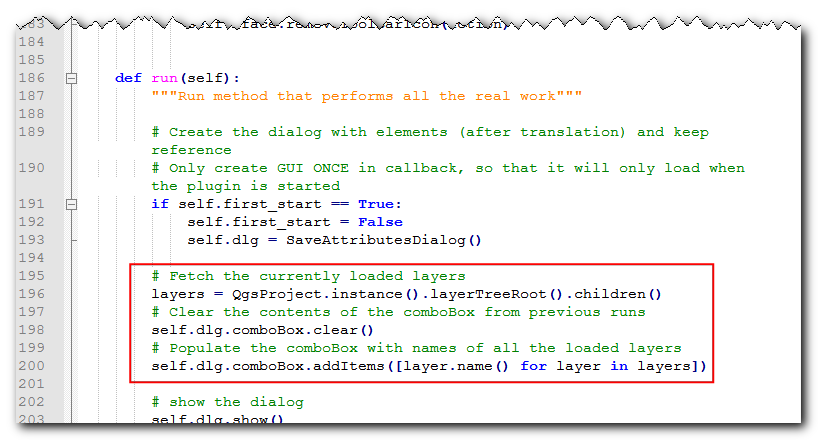
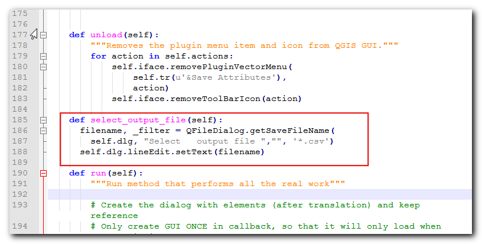
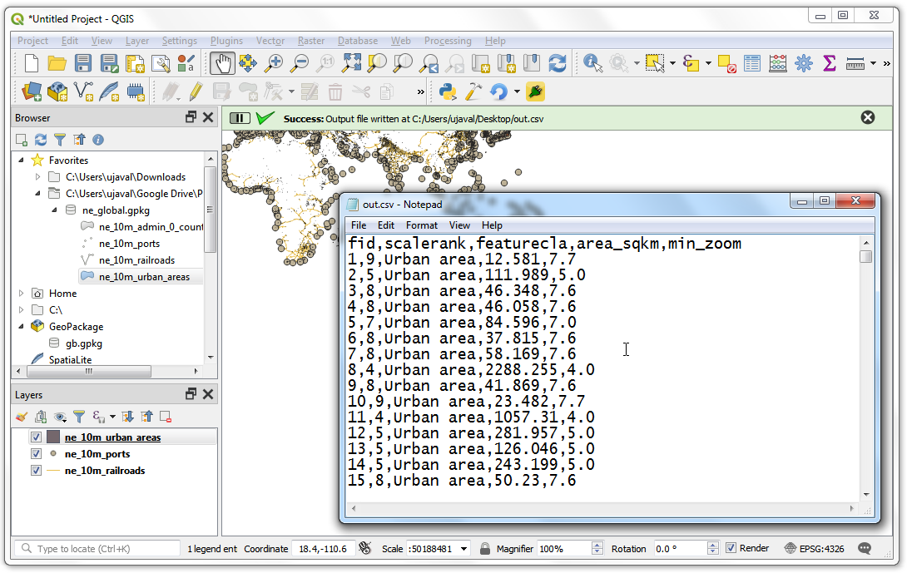

Ujaval Gandhi
Ujaval GandhiKreiranje dodatka za Pajton (QGIS3)¶
Dodaci „Plagin-ovi” su odličan način za proširenje funkcionalnosti QGIS-a. Možete pisati dodatke koristeći Python, koji mogu varirati od dodavanja jednostavnog dugmeta do sofisticiranih alata. Ovaj tutorijal će opisati proces podešavanja razvojnog okruženja, dizajniranja korisničkog interfejsa za dodatak i pisanja koda za interakciju sa QGIS-om. Molimo vas da pregledate tutorijal Početak programiranja u Pajtonu (QGIS3) da biste se upoznali sa osnovama.
Белешка
Ako pravite novi dodatak, toplo preporučujem da napravite dodatak za obradu umesto dodatka za grafički korisnički interfejs opisanog u ovom tutorijalu. Pogledajte Izrada dodatka za obradu (QGIS3) za detalje.
Pregled zadataka¶
Razvićemo jednostavan dodatak pod nazivom „Sačuvaj atribute“ koji će omogućiti korisnicima da izaberu vektorski sloj i zapišu njegove atribute u CSV datoteku.
Nabavite alate¶
QT Kreator¶
Qt je frejmvork za razvoj softvera koji se koristi za razvoj aplikacija koje rade na Windows, Mac, Linux, kao i raznim mobilnim operativnim sistemima. Sam QGIS je napisan pomoću Qt frejmvorka. Za razvoj dodataka, koristićemo aplikaciju pod nazivom Qt Creator da bismo dizajnirali interfejs za naš dodatak.
Preuzmite i instalirajte instalater Qt Creator-a sa sajta Qt Offline Installers. Uverite se da ste izabrali Qt Creator na stranici za preuzimanje. Imajte na umu da ćete morati da kreirate besplatan Qt nalog da biste instalirali paket.
Белешка
Instalater OSGeo4w za QGIS na Windows-u uključuje kopiju programa Qt Designer, koji je lagana verzija Qt Creator-a i savršeno je pogodan za izradu dodataka. Možete preskočiti preuzimanje Qt Creator-a i koristiti ga umesto toga iz .

Pajton povezivanja za Qt¶
Pošto razvijamo dodatak u Pajtonu, potrebno je da instaliramo Pajton povezivanja za Qt. Način njihovog instaliranja zavisiće od platforme koju koristite. Za izradu dodataka potreban nam je alat komandne linije pyrcc5.
Windows
Relevantna povezivanja za Pajton su uključena u instalaciju QGIS-a na Windows-u. Ali da bismo ih koristili iz fascikle dodataka, moramo naznačiti putanju do instalacije QGIS-a.
Napravite Windows Batch datoteku (ekstenzija .bat) sa sledećim sadržajem i sačuvajte je na računaru kao compile.bat. Kasnije ćemo kopirati ovu datoteku u fasciklu dodatka. Ako ste instalirali QGIS na drugoj putanji, zamenite C:\OSGeo4W64\bin\ sa vašom putanjom.
@echo off
call "C:\OSGeo4W64\bin\o4w_env.bat"
call "C:\OSGeo4W64\bin\qt5_env.bat"
call "C:\OSGeo4W64\bin\py3_env.bat"
@echo on
pyrcc5 -o resources.py resources.qrc

Mac
Instalirajte Homebrew menadžer paketa. Instalirajte PyQt paket pokretanjem sledeće komande:
brew install pyqt
- Linux
U zavisnosti od vaše distribucije, pronađite i instalirajte paket
python-qt5. Na distribucijama zasnovanim na Ubuntu i Debian-u, možete pokrenuti sledeću komandu:
sudo apt-get install python-qt5
Белешка
Možda ćete otkriti da je QGIS već instalirao ovaj paket.
Uređivač teksta ili Pajton IDE¶
Bilo koja vrsta razvoja softvera zahteva dobar uređivač teksta. Ako već imate omiljeni uređivač teksta ili IDE (integrisano razvojno okruženje), možete ga koristiti za ovaj tutorijal. U suprotnom, svaka platforma nudi širok izbor besplatnih ili plaćenih opcija za uređivače teksta. Izaberite onaj koji odgovara vašim potrebama.
Ovaj tutorijal koristi Notepad++ editor na Windows-u.
Windows
Notepad++ je dobar besplatni editor za Windows. Preuzmite i instalirajte Notepad++ editor.
Белешка
Ako koristite Notepad++, obavezno idite na i omogućite Replace by space. Python je veoma osetljiv na razmake i ovo podešavanje će osigurati da se tabulatori i razmaci pravilno tretiraju.
Dodatak za kreiranje dodataka¶
Postoji koristan QGIS dodatak pod nazivom Plugin Builder koji kreira sve potrebne datoteke i šablonski kod za dodatak. Pronađite i instalirajte dodatak Plugin Builder. Pogledajte Korišćenje dodataka za više detalja o tome kako instalirati dodatke.
Dodaci dodatak za ponovno učitavanje¶
Ovo je još jedan pomoćni dodatak koji omogućava iterativni razvoj dodataka. Koristeći ovaj dodatak, možete promeniti kod svog dodatka i on će se odraziti u QGIS-u bez potrebe da svaki put ponovo pokrećete QGIS. Pronađite i instalirajte dodatak Plugin Reloader. Pogledajte Korišćenje dodataka za više detalja o tome kako instalirati dodatke.
Белешка
Plugin Reloader je eksperimentalni dodatak. Uverite se da ste označili Prikaži i eksperimentalne dodatke u podešavanjima Plugin Manager ako ga ne možete pronaći.
Procedura¶
Otvorite QGIS. Idite na .

Videćete dijalog QGIS Plugin Builder sa formularom. Možete popuniti formular detaljima koji se odnose na naš dodatak. Naziv klase će biti naziv Pajton klase koja sadrži logiku dodatka. Ovo će takođe biti naziv fascikle koja sadrži sve datoteke dodatka. Unesite
SaveAttributeskao naziv klase. Naziv dodatka je naziv pod kojim će se vaš dodatak pojaviti u Plugin Manager. Unesite naziv kaoSave Attributes. Dodajte opis u polje Description. Naziv modula će biti naziv glavne Pajton datoteke za dodatak. Unesite ga kaosave_attributes. Ostavite brojeve verzija kakvi jesu i unesite svoje ime i adresu e-pošte u odgovarajuća polja. Kliknite na Dalje.

Unesite kratak opis dodatka za dijalog O nama i kliknite na Dalje.
Izaberite „Dugme za alatke sa dijalogom“ iz selektora Šablon. Vrednost Tekst za stavku menija će biti način na koji će korisnici pronaći vaš dodatak u QGIS meniju. Unesite je kao
Sačuvaj atribute kao CSV. Polje Meni će odrediti gde će se stavka vašeg dodatka dodati u QGIS. Pošto je naš dodatak za vektorske podatke, izaberiteVektor. Kliknite na Sledeće.

Konstruktor dodataka će vas pitati koje vrste datoteka treba generisati. Zadržite podrazumevani izbor i kliknite na Dalje.

Pošto ne nameravamo da objavimo dodatak, možete ostaviti vrednosti Praćenje grešaka, Repozitorijum i Početna stranica na podrazumevane vrednosti. Označite polje Označi dodatak kao eksperimentalni na dnu i kliknite na Sledeće.
Biće vam zatraženo da izaberete direktorijum za vaš dodatak. Za sada, sačuvajte ga u direktorijum koji možete lako pronaći na računaru i kliknite na Generiši.
Zatim, pritisnite dugme generate. Videćete dijalog za potvrdu kada vaš šablon dodatka bude kreiran.

Белешка
Možda ćete dobiti poruku koja kaže da pyrcc5 nije pronađen u putanji. Možete ignorisati ovu poruku.
Pre nego što možemo da koristimo novokreirani dodatak, potrebno je da kompajliramo datoteku
resources.qrckoju je kreirao Plugin Builder. Ova datoteka je deo Qt Resource System koji se odnosi na sve binarne datoteke korišćene u dodatku. Za ovaj dodatak, on će imati samo ikonu dodatka. Kompajliranje ove datoteke generiše kod aplikacije koji se može koristiti u dodatku nezavisno od toga na kojoj platformi se dodatak pokreće. Pratite uputstva specifična za platformu za ovaj korak.
Windows
Sada možete kopirati datoteku compile.bat (kreiranu tokom odeljka Python Bindings for Qt na početku) u fasciklu dodatka. Nakon kopiranja, dvaput kliknite na datoteku da biste je pokrenuli. Ako je pokretanje bilo uspešno, videćete novu datoteku pod nazivom resources.py u fascikli.
Белешка
Ako ovaj korak ne uspe, možete pokrenuti cmd.exe i pregledati fasciklu sa dodatkom pomoću komande cd. Pokrenite paketnu datoteku pokretanjem compile.bat da biste videli grešku.
Mac and Linux
Prvo ćete morati da instalirate pb_tool. Otvorite terminal i instalirajte ga preko pip-a.
sudo pip3 install pb_tool
Otvorite terminal, idite u direktorijum dodataka i otkucajte pb_tool compile. Ovo će pokrenuti komandu pyrcc5 koju smo instalirali kao deo odeljka Python Bindings for Qt.
pb_tool compile
Dodaci u QGIS-u se čuvaju u posebnoj fascikli. Moramo da kopiramo naš direktorijum dodataka u tu fasciklu pre nego što se može koristiti. U QGIS-u, pronađite trenutnu fasciklu profila tako što ćete otići na .
U folderu profila, kopirajte folder sa dodatkom u podfolder .

Sada smo spremni da prvi put pogledamo potpuno novi dodatak koji smo kreirali. Zatvorite QGIS i ponovo ga pokrenite. Idite na i omogućite dodatak
Sačuvaj atributena kartici Instalirano.

Primetićete da postoji nova ikona u traci sa alatkama dodatka i novi meni pod . Izaberite ga da biste pokrenuli dijalog dodatka.

Primetićete novi prazan dijalog pod nazivom Sačuvaj atribute. Zatvorite ovaj dijalog.

Sada ćemo dizajnirati naš dijaloški okvir i dodati mu neke elemente korisničkog interfejsa. Otvorite program
Qt Creatori idite na .

Idite do direktorijuma dodatka i izaberite datoteku
save_attributes_dialog_base.ui. Kliknite na Otvori.

Белешка
Windows skriva fasciklu „AppData“ tako da je možda nećete videti u dijalogu za izbor datoteka. Možete uneti „AppData“ u Ime datoteke iz njenog matičnog direktorijuma da biste je otvorili.
Videćete prazan dijalog iz dodatka. Možete prevlačiti i ispuštati elemente sa leve strane dijaloga. Dodaćemo tip Combo Box sa Input Widgets. Prevucite ga u dijalog dodatka.

Promenite veličinu kombinovanog okvira i podesite njegovu veličinu. Sada prevucite Oznaka tipa Prikaz vidžeta u dijalog.

Kliknite na tekst oznake i unesite „Izaberi sloj“.

Sačuvajte ovu datoteku tako što ćete otići na . Imajte na umu da je naziv objekta kombinovane kutije
comboBox. Da bismo interagovali sa ovim objektom koristeći Pajton kod, moraćemo da ga pozovemo pod ovim imenom.

Hajde da ponovo učitamo naš dodatak kako bismo mogli da vidimo promene u dijaloškom prozoru. Idite na . Izaberite
SaveAttributesu dijalogu Konfiguriši program za ponovno učitavanje dodataka.

Kliknite na dugme Ponovo učitaj dodatak da biste učitali najnoviju verziju dodatka. Kliknite na dugme Sačuvaj atribute kao CSV da biste otvorili novodizajnirani dijaloški prozor.

Dodajmo malo logike dodatku koji će popuniti kombinovani okvir slojevima učitanim u QGIS. Idite u direktorijum dodatka i učitajte datoteku
save_attributes.pyu uređivaču teksta. Prvo, umetnite na vrh datoteke sa ostalim uvozima:from qgis.core import QgsProject
Zatim se pomerite nadole do kraja i pronađite metodu
run(self). Ova metoda će biti pozvana kada kliknete na dugme na traci sa alatkama ili izaberete stavku menija dodatka. Dodajte sledeći kod na početak metode. Ovaj kod učitava slojeve u QGIS-u i dodaje ih objektucomboBoxiz dijaloga dodatka.# Fetch the currently loaded layers layers = QgsProject.instance().layerTreeRoot().children() # Clear the contents of the comboBox from previous runs self.dlg.comboBox.clear() # Populate the comboBox with names of all the loaded layers self.dlg.comboBox.addItems([layer.name() for layer in layers])

Nazad u glavnom prozoru QGIS-a, ponovo učitajte dodatak klikom na dugme Ponovo učitaj dodatak. Da bismo testirali ovu novu funkcionalnost, moramo učitati neke slojeve u QGIS. Nakon što ste učitali neke slojeve, pokrenite dodatak tako što ćete otići na . Videćete da je naš kombinovani okvir sada popunjen imenima slojeva koji su učitani u QGIS.

Dodajmo preostale elemente korisničkog interfejsa. Vratimo se na Qt Creator i učitajmo datoteku
save_attributes_dialog_base.ui. DodajLabelDisplay Widget i promeni tekst uSelect output file. DodajLineEdittipa Input Widget koji će prikazivati putanju izlazne datoteke koju je korisnik izabrao. Zatim, dodajPush Buttontipa Button i promeni oznaku dugmeta u.... Zabeležite imena objekata vidžeta koje ćemo morati da koristimo za interakciju sa njima. Sačuvaj datoteku.
Sada ćemo dodati Pajton kod za otvaranje pregledača datoteka kada korisnik klikne na dugme „…“ i prikazivanje putanje za izbor u vidžetu za uređivanje linije. Otvorite datoteku „save_attributes.py“ u uređivaču teksta. Dodajte „QFileDialog“ na listu uvoza „QtWidgets“ na vrhu datoteke.

Dodajte novu metodu pod nazivom
select_output_filesa sledećim kodom. Ovaj kod će otvoriti pregledač datoteka i popuniti vidžet za uređivanje linije putanjom datoteke koju je korisnik izabrao. Obratite pažnju na to kakogetSaveFileNamevraća korku sa imenom datoteke i korišćenim filterom.
def select_output_file(self): filename, _filter = QFileDialog.getSaveFileName( self.dlg, "Select output file ","", '*.csv') self.dlg.lineEdit.setText(filename)
Sada treba da dodamo kod tako da kada se klikne na dugme …, bude pozvana metoda
select_output_file. Pomerite se nadole do metoderuni dodajte sledeći red u blok gde se dijalog inicijalizuje. Ovaj kod će povezati metoduselect_output_filesa signalomclickedvidžeta dugmeta.
self.dlg.pushButton.clicked.connect(self.select_output_file)
Vratite se u QGIS, ponovo učitajte dodatak i pokrenite ga. Ako je sve prošlo u redu, moći ćete da kliknete na dugme „…“ i izaberete izlaznu tekstualnu datoteku sa vašeg diska.

Kada kliknete na OK u dijalogu dodatka, ništa se ne dešava. To je zato što nismo dodali logiku za preuzimanje informacija o atributima iz sloja i njihovo pisanje u tekstualnu datoteku. Sada imamo sve delove na mestu da uradimo upravo to. Pronađite mesto u metodi
rungde pišepass. Zamenite ga kodom ispod. Objašnjenje za ovaj kod možete pronaći u Početak programiranja u Pajtonu (QGIS3).filename = self.dlg.lineEdit.text() with open(filename, 'w') as output_file: selectedLayerIndex = self.dlg.comboBox.currentIndex() selectedLayer = layers[selectedLayerIndex].layer() fieldnames = [field.name() for field in selectedLayer.fields()] # write header line = ','.join(name for name in fieldnames) + '\n' output_file.write(line) # write feature attributes for f in selectedLayer.getFeatures(): line = ','.join(str(f[name]) for name in fieldnames) + '\n' output_file.write(line)

Imamo još jednu stvar koju želimo da dodamo. Kada se operacija uspešno završi, trebalo bi da to obavestimo korisnika. Preferirani način za slanje obaveštenja korisniku u QGIS-u je putem metode
self.iface.messageBar().pushMessage(). DodajteQgisna listu importovanih datotekaqgis.corena vrhu datoteke i dodajte kod ispod na kraj metoderun.
self.iface.messageBar().pushMessage( "Success", "Output file written at " + filename, level=Qgis.Success, duration=3)

Sada je naš dodatak spreman. Ponovo učitajte dodatak i isprobajte ga. Videćete da će izlazna tekstualna datoteka koju ste izabrali imati atribute iz vektorskog sloja.

Možete da arhivirate direktorijum dodataka i delite ga sa svojim korisnicima. Oni mogu da raspakuju sadržaj u svoj direktorijum dodataka i isprobaju vaš dodatak. Ako je ovo pravi dodatak, otpremili biste ga u QGIS repozitorijum dodataka kako bi svi QGIS korisnici mogli da pronađu i preuzmu vaš dodatak.
Белешка
Ovaj dodatak je samo u demonstracione svrhe. Nemojte objavljivati ovaj dodatak niti ga otpremati u repozitorijum dodataka QGIS-a.
Ispod je kompletna datoteka save_attributes.py kao referenca.
# -*- coding: utf-8 -*-
"""
/***************************************************************************
SaveAttributes
A QGIS plugin
This plugin saves the attributes of the selected vector layer as a CSV file.
Generated by Plugin Builder: http://g-sherman.github.io/Qgis-Plugin-Builder/
-------------------
begin : 2019-03-28
git sha : $Format:%H$
copyright : (C) 2019 by Ujaval Gandhi
email : ujaval@spatialthoughts.com
***************************************************************************/
/***************************************************************************
* *
* This program is free software; you can redistribute it and/or modify *
* it under the terms of the GNU General Public License as published by *
* the Free Software Foundation; either version 2 of the License, or *
* (at your option) any later version. *
* *
***************************************************************************/
"""
from PyQt5.QtCore import QSettings, QTranslator, qVersion, QCoreApplication
from PyQt5.QtGui import QIcon
from PyQt5.QtWidgets import QAction, QFileDialog
from qgis.core import QgsProject, Qgis
# Initialize Qt resources from file resources.py
from .resources import *
# Import the code for the dialog
from .save_attributes_dialog import SaveAttributesDialog
import os.path
class SaveAttributes:
"""QGIS Plugin Implementation."""
def __init__(self, iface):
"""Constructor.
:param iface: An interface instance that will be passed to this class
which provides the hook by which you can manipulate the QGIS
application at run time.
:type iface: QgsInterface
"""
# Save reference to the QGIS interface
self.iface = iface
# initialize plugin directory
self.plugin_dir = os.path.dirname(__file__)
# initialize locale
locale = QSettings().value('locale/userLocale')[0:2]
locale_path = os.path.join(
self.plugin_dir,
'i18n',
'SaveAttributes_{}.qm'.format(locale))
if os.path.exists(locale_path):
self.translator = QTranslator()
self.translator.load(locale_path)
if qVersion() > '4.3.3':
QCoreApplication.installTranslator(self.translator)
# Declare instance attributes
self.actions = []
self.menu = self.tr(u'&Save Attributes')
# Check if plugin was started the first time in current QGIS session
# Must be set in initGui() to survive plugin reloads
self.first_start = None
# noinspection PyMethodMayBeStatic
def tr(self, message):
"""Get the translation for a string using Qt translation API.
We implement this ourselves since we do not inherit QObject.
:param message: String for translation.
:type message: str, QString
:returns: Translated version of message.
:rtype: QString
"""
# noinspection PyTypeChecker,PyArgumentList,PyCallByClass
return QCoreApplication.translate('SaveAttributes', message)
def add_action(
self,
icon_path,
text,
callback,
enabled_flag=True,
add_to_menu=True,
add_to_toolbar=True,
status_tip=None,
whats_this=None,
parent=None):
"""Add a toolbar icon to the toolbar.
:param icon_path: Path to the icon for this action. Can be a resource
path (e.g. ':/plugins/foo/bar.png') or a normal file system path.
:type icon_path: str
:param text: Text that should be shown in menu items for this action.
:type text: str
:param callback: Function to be called when the action is triggered.
:type callback: function
:param enabled_flag: A flag indicating if the action should be enabled
by default. Defaults to True.
:type enabled_flag: bool
:param add_to_menu: Flag indicating whether the action should also
be added to the menu. Defaults to True.
:type add_to_menu: bool
:param add_to_toolbar: Flag indicating whether the action should also
be added to the toolbar. Defaults to True.
:type add_to_toolbar: bool
:param status_tip: Optional text to show in a popup when mouse pointer
hovers over the action.
:type status_tip: str
:param parent: Parent widget for the new action. Defaults None.
:type parent: QWidget
:param whats_this: Optional text to show in the status bar when the
mouse pointer hovers over the action.
:returns: The action that was created. Note that the action is also
added to self.actions list.
:rtype: QAction
"""
icon = QIcon(icon_path)
action = QAction(icon, text, parent)
action.triggered.connect(callback)
action.setEnabled(enabled_flag)
if status_tip is not None:
action.setStatusTip(status_tip)
if whats_this is not None:
action.setWhatsThis(whats_this)
if add_to_toolbar:
# Adds plugin icon to Plugins toolbar
self.iface.addToolBarIcon(action)
if add_to_menu:
self.iface.addPluginToVectorMenu(
self.menu,
action)
self.actions.append(action)
return action
def initGui(self):
"""Create the menu entries and toolbar icons inside the QGIS GUI."""
icon_path = ':/plugins/save_attributes/icon.png'
self.add_action(
icon_path,
text=self.tr(u'Save Attributes as CSV'),
callback=self.run,
parent=self.iface.mainWindow())
# will be set False in run()
self.first_start = True
def unload(self):
"""Removes the plugin menu item and icon from QGIS GUI."""
for action in self.actions:
self.iface.removePluginVectorMenu(
self.tr(u'&Save Attributes'),
action)
self.iface.removeToolBarIcon(action)
def select_output_file(self):
filename, _filter = QFileDialog.getSaveFileName(
self.dlg, "Select output file ","", '*.csv')
self.dlg.lineEdit.setText(filename)
def run(self):
"""Run method that performs all the real work"""
# Create the dialog with elements (after translation) and keep reference
# Only create GUI ONCE in callback, so that it will only load when the plugin is started
if self.first_start == True:
self.first_start = False
self.dlg = SaveAttributesDialog()
self.dlg.pushButton.clicked.connect(self.select_output_file)
# Fetch the currently loaded layers
layers = QgsProject.instance().layerTreeRoot().children()
# Clear the contents of the comboBox and lineEdit from previous runs
self.dlg.comboBox.clear()
self.dlg.lineEdit.clear()
# Populate the comboBox with names of all the loaded layers
self.dlg.comboBox.addItems([layer.name() for layer in layers])
# show the dialog
self.dlg.show()
# Run the dialog event loop
result = self.dlg.exec_()
# See if OK was pressed
if result:
filename = self.dlg.lineEdit.text()
with open(filename, 'w') as output_file:
selectedLayerIndex = self.dlg.comboBox.currentIndex()
selectedLayer = layers[selectedLayerIndex].layer()
fieldnames = [field.name() for field in selectedLayer.fields()]
# write header
line = ','.join(name for name in fieldnames) + '\n'
output_file.write(line)
# write feature attributes
for f in selectedLayer.getFeatures():
line = ','.join(str(f[name]) for name in fieldnames) + '\n'
output_file.write(line)
self.iface.messageBar().pushMessage(
"Success", "Output file written at " + filename,
level=Qgis.Success, duration=3)
If you want to give feedback or share your experience with this tutorial, please comment below. (requires GitHub account)